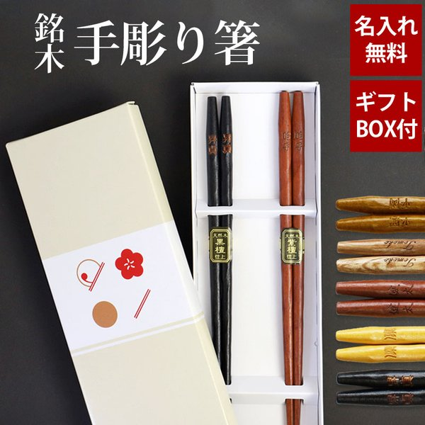
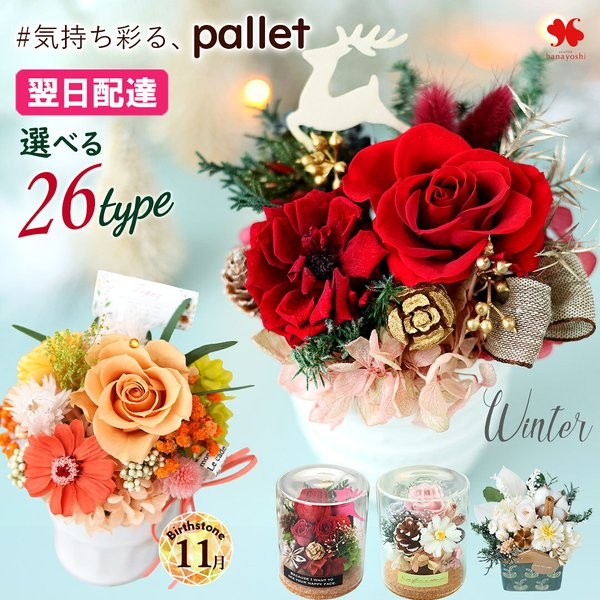
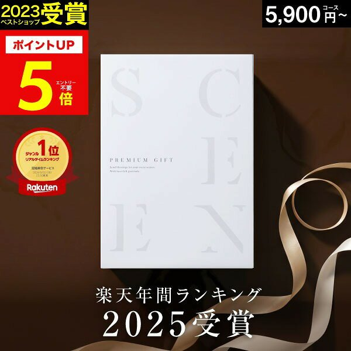
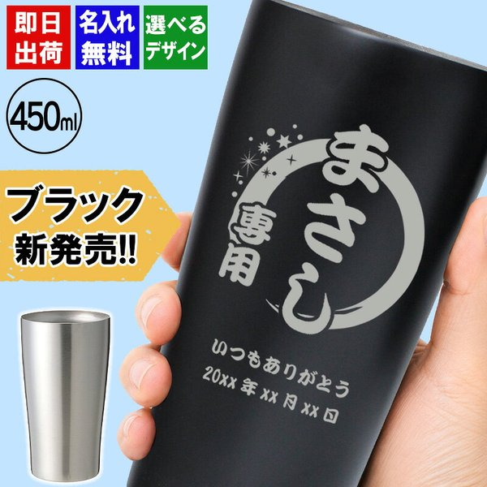
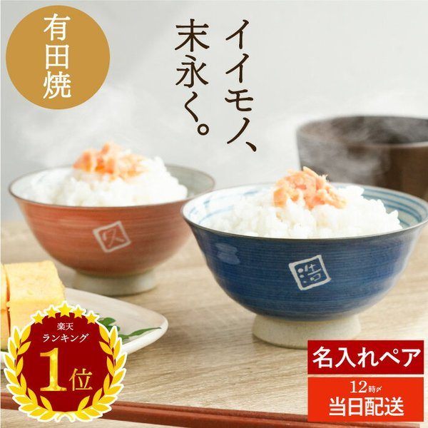
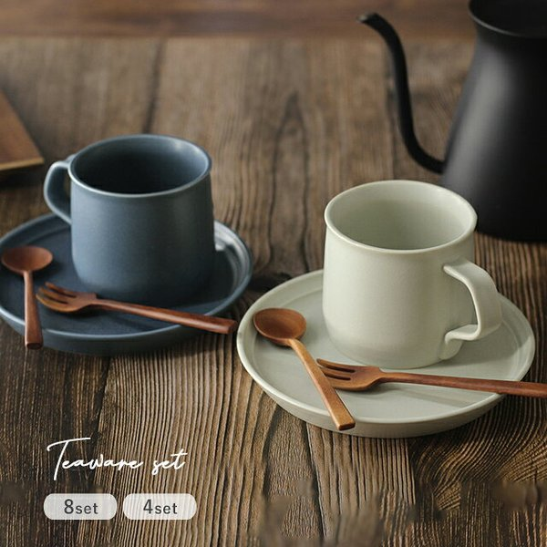
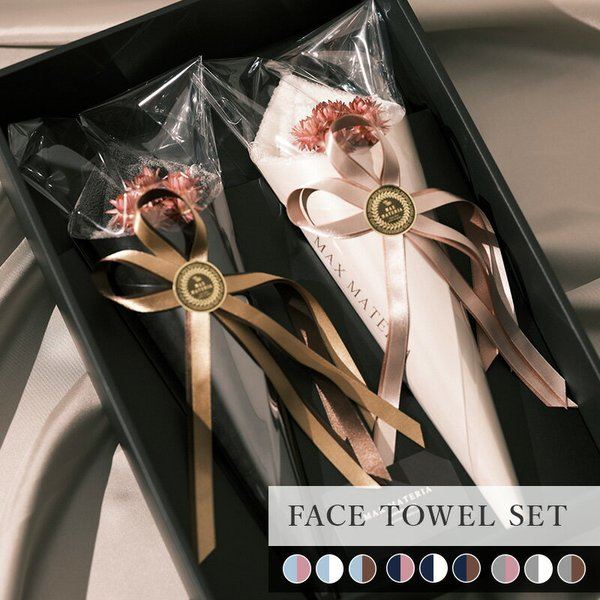
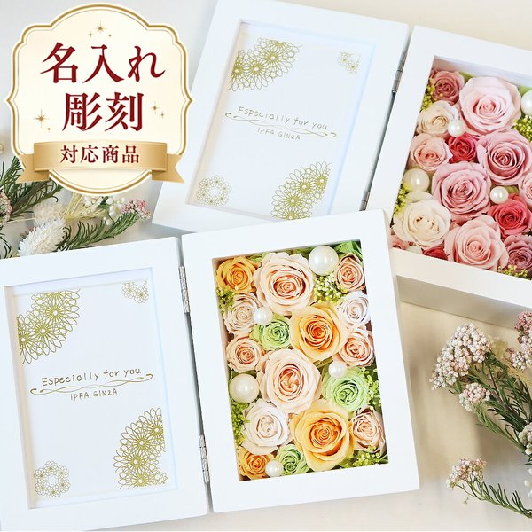
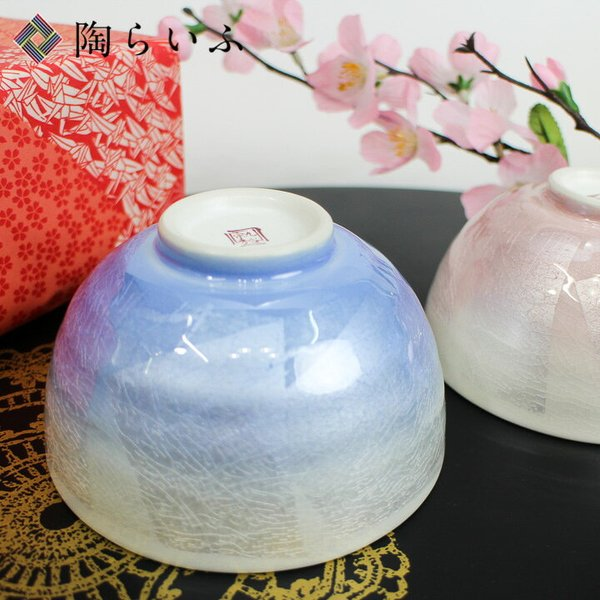
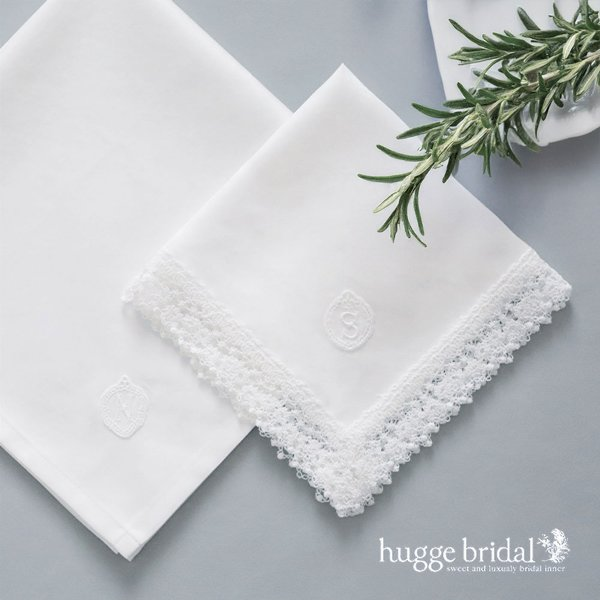

【2026年・結婚祝い＆ペアギフト10選】夫婦箸 名入れ・プリザーブドフラワー パレット・カタログギフト SCENE・名入れタンブラー・有田焼 夫婦茶碗・KINTO FOG・MAXMATERIA 花束タオル・プリザーブドフラワー フォトフレーム・九谷焼 夫婦茶碗・ブライダルハンカチを実売価格で比較
結婚祝いは、2人で使えるものがいちばん喜ばれます。同じものを2つ揃えるペアの食器やタンブラーは、使うたびに贈られた日のことを思い出せる贈り物です。名前を入れられるものなら、ほかの人と重ならないのも選ばれる理由になります。
選ぶ軸は3つです。まず名前を入れられるか。夫婦箸やタンブラー、茶碗は名入れで記念日の贈り物になります。次に使う場面。毎日の食卓なら食器、飾るなら花やフォトフレーム、好みが分からないならカタログギフトが外しません。最後に渡す時期。結婚式の前なら熨斗と包装、当日なら手提げ袋の有無まで確認しておくと慌てません。
本記事では、楽天市場で人気・高評価の結婚祝い・ペアギフト10選を、実売価格とレビュー評価つきで写真付き紹介します。
- おすすめ10選 スペック・特徴比較表
- BEST 1｜名入れ無料 夫婦箸 銘木 手彫り箸 ペアセット
- BEST 2｜プリザーブドフラワー パレット アレンジ
- BEST 3｜カタログギフト SCENE 12コース
- BEST 4｜名入れタンブラー 450ml
- BEST 5｜有田焼 粉引千段 夫婦茶碗 名入れ
- BEST 6｜KINTO FOG マグ＆プレート＋カトラリーセット
- BEST 7｜MAXMATERIA 花束タオル フェイスタオル ギフトセット
- BEST 8｜プリザーブドフラワー フォトフレーム 名入れ
- BEST 9｜九谷焼 夫婦茶碗 銀彩 宗秀窯
- BEST 10｜ブライダル イニシャル ハンカチ ペア
- 【読者負担0円】買わなくても得する無料サービス
- まとめ：結婚祝い・ペアギフト10選の選び方
| 順位 | 商品名 | ブランド | 最大の特徴・おすすめ理由 | 総合評価 |
|---|---|---|---|---|
| BEST 1 | 名入れ無料 夫婦箸 銘木 手彫り箸 ペアセット | みよし漆器本舗 | 名入れが無料で彫ってもらえる | 4.72 |
| BEST 2 | プリザーブドフラワー パレット アレンジ | フラワーマーケット花由 | 水やり不要で長く飾れる | 4.60 |
| BEST 3 | カタログギフト SCENE 12コース | SCENE（カタログギフト） | 12コースから相手が品を選べる | 4.70 |
| BEST 4 | 名入れタンブラー 450ml | ギフトろけっと | 名入れで世界に1つのタンブラーになる | 4.67 |
| BEST 5 | 有田焼 粉引千段 夫婦茶碗 名入れ | 有田焼（FLEGRE） | 有田焼の夫婦茶碗のペア | 4.75 |
| BEST 6 | KINTO FOG マグ＆プレート＋カトラリーセット | KINTO（キントー） | マグ・プレート・カトラリーが揃う | 4.85 |
| BEST 7 | MAXMATERIA 花束タオル フェイスタオル ギフトセット | MAXMATERIA（マックスマテリア） | 花束の形で渡せるタオルギフト | 4.81 |
| BEST 8 | プリザーブドフラワー フォトフレーム 名入れ | プリザーブドフラワーIPFA | 写真と花を一緒に飾れる | 4.77 |
| BEST 9 | 九谷焼 夫婦茶碗 銀彩 宗秀窯 | 九谷焼 | 九谷焼の手描きの銀彩 | 4.82 |
| BEST 10 | ブライダル イニシャル ハンカチ ペア | hugge handkerchief | イニシャル刺繍が入れられる | 4.65 |
名入れ無料 夫婦箸 銘木 手彫り箸 ペアセット

銘木を手彫りした夫婦箸のペアセットです。2膳の長さが少し違い、持つ人の手に合わせて選べます。名入れが無料で、漢字やひらがなを彫ってもらえるので、結婚祝いや還暦の贈り物として渡せます。楽天市場での実売価格は約1,200円（2026年11月時点）。
- 名入れが無料で彫ってもらえる
- 銘木の手彫りで軽い
- 2膳セットで贈り物にちょうどよい
- 天然木なので、色味や木目は1膳ずつ違う
プリザーブドフラワー パレット アレンジ

フラワーマーケット花由のプリザーブドフラワー「パレット」です。バラを中心に組んだアレンジで、水やりが要らず、長く飾れます。色の組み合わせを選べるので、贈る相手の部屋に合わせて決められます。楽天市場での実売価格は約3,390円（2026年11月時点）。
- 水やり不要で長く飾れる
- 色の組み合わせを選べる
- 翌日配達に対応している
- 生花ではないので、香りはほとんどない
カタログギフト SCENE 12コース

カタログギフトのSCENEは、5千円から2万円までのコースから品を選べるギフトです。食品や雑貨、体験まで選択肢が広く、相手の好みが分からない結婚祝いでも外しにくいのが利点です。熨斗や包装にも対応しています。楽天市場での実売価格は約4,780円（2026年11月時点）。
- 12コースから相手が品を選べる
- 好みが分からない相手にも贈りやすい
- 熨斗や包装に対応している
- 相手が選ぶ手間がかかるので、期限を伝えておく
名入れタンブラー 450ml

名入れができるステンレスのタンブラーです。450mlの容量で、ビールや炭酸水を入れても泡が持ちやすい形をしています。名前や短いメッセージを彫れるので、夫婦の記念日や結婚祝いのペアギフトとして渡せます。楽天市場での実売価格は約2,980円（2026年11月時点）。
- 名入れで世界に1つのタンブラーになる
- 450mlで飲みごたえがある
- 保温・保冷の両方に使える
- 名入れの文字数に上限があるので、注文前に確認する
有田焼 粉引千段 夫婦茶碗 名入れ

有田焼の粉引千段の夫婦茶碗です。ろくろの段が重なる形で、粉引の白い釉薬が料理を引き立てます。名入れに対応していて、夫婦の名前を入れて結婚記念日の贈り物にできます。電子レンジと食洗機にも対応しています。楽天市場での実売価格は約6,980円（2026年11月時点）。
- 有田焼の夫婦茶碗のペア
- 名入れで記念日の贈り物にできる
- 電子レンジと食洗機に対応
- 粉引は使ううちに味が出るが、最初は釉薬の色むらがある
KINTO FOG マグ＆プレート＋カトラリーセット

KINTOのFOGシリーズのマグとプレートに、カトラリーを合わせたセットです。ガラスのような曇りをまとった磁器で、手になじむ丸みがあります。マグとプレート、スプーンとフォークが揃うので、新婚の食卓をそのまま整えられます。楽天市場での実売価格は約5,940円（2026年11月時点）。
- マグ・プレート・カトラリーが揃う
- 曇りがかった磁器で落ち着いた見た目
- 食洗機と電子レンジに対応
- カトラリーはデザート用の小さいサイズ
MAXMATERIA 花束タオル フェイスタオル ギフトセット

MAXMATERIAの花束タオルは、木から生まれた繊維で作ったフェイスタオルを花束のように包んだギフトです。見た目は花束で、ほどくとタオルとして使えます。使わないときは飾っておけるので、結婚祝いの贈り物として渡しやすい形です。楽天市場での実売価格は約9,900円（2026年11月時点）。
- 花束の形で渡せるタオルギフト
- 天然由来の繊維で肌触りがよい
- 飾ってから使える
- フェイスタオル2枚のセットなので、枚数を求める人には物足りない
プリザーブドフラワー フォトフレーム 名入れ

プリザーブドフラワーをあしらったフォトフレームです。L判の写真を1枚入れられ、縁に花が付いています。名入れにも対応していて、結婚式の写真を入れて贈ると、記念日ごとに飾れる贈り物になります。楽天市場での実売価格は約7,480円（2026年11月時点）。
- 写真と花を一緒に飾れる
- 名入れに対応している
- 枯れないので長く飾れる
- 花の部分があるぶん、写真の差し替えは裏面から行う
九谷焼 夫婦茶碗 銀彩 宗秀窯

九谷焼の宗秀窯の夫婦茶碗です。銀彩の線が入った器で、大小2つの茶碗が化粧箱に入っています。手描きの線なので、同じ柄でも器ごとに表情が違います。結婚祝いや長寿の祝いに合わせた贈り物として選べます。楽天市場での実売価格は約6,600円（2026年11月時点）。
- 九谷焼の手描きの銀彩
- 化粧箱入りで贈り物にそのまま使える
- 大小2つで夫婦茶碗になる
- 手描きのため、銀彩の線の入り方は1客ずつ違う
ブライダル イニシャル ハンカチ ペア

日本製のブライダルハンカチのペアです。ノンレースとレースの2枚がセットで、イニシャルを刺繍できます。白地に小さなワンポイントが入った清楚な柄なので、結婚式の当日に持つにも、記念に残すにも向いています。楽天市場での実売価格は約4,350円（2026年11月時点）。
- イニシャル刺繍が入れられる
- レースとノンレースの2枚セット
- 日本製の大判ハンカチ
- 刺繍の書体と糸色は注文時に選ぶ必要がある
この記事の商品を買う前に、まずは無料で得する選択肢をチェック。どれも登録・利用は0円で、無料期間中に解約すれば料金はかかりません。読みたい雑誌がある人、ポイントを貯めたい人、アンケートなら気軽という人、それぞれに合うものを選べます。
初回31日無料・無料期間中に解約すれば0円 → 楽天ポイントモール｜登録無料で毎日ポイ活
買い物なしでもポイントが貯まる無料サービス → 楽天インサイト｜アンケートに答えてポイント
登録無料・すきま時間のアンケートで貯まる → 楽天カード｜年会費永年無料
新規発行・年会費ずっと0円 →
4つのサービスの違いと使い分けは「出費0円で得する！買わずにポイントが貯まる無料サービス厳選4選」でまとめています。
💡 まとめ：結婚祝い・ペアギフト10選の選び方
結婚祝いは、2人の暮らしで使う場面を想像して選ぶと喜ばれます。食卓に並ぶものなら名入れ無料の夫婦箸、有田焼の粉引千段 夫婦茶碗、九谷焼の夫婦茶碗、KINTOのFOGマグセット。飲み物を楽しむなら名入れタンブラー、飾るならプリザーブドフラワーのパレットか、写真を入れられるプリザーブドフラワーのフォトフレーム。形に残るものを贈りたいならMAXMATERIAの花束タオルとブライダルのイニシャルハンカチ、相手に選んでもらうならカタログギフトのSCENEです。名入れは仕上がりまで日数がかかるので、渡す日の2週間前には注文しておくと安心です。
楽天市場では「5と0のつく日」や「お買い物マラソン」などのキャンペーンに合わせて購入すると、ポイント還元が最大化してお得に手に入ります。ぜひチェックしてみてくださいね。